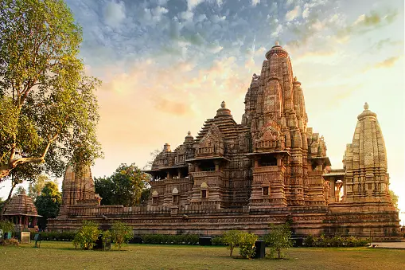
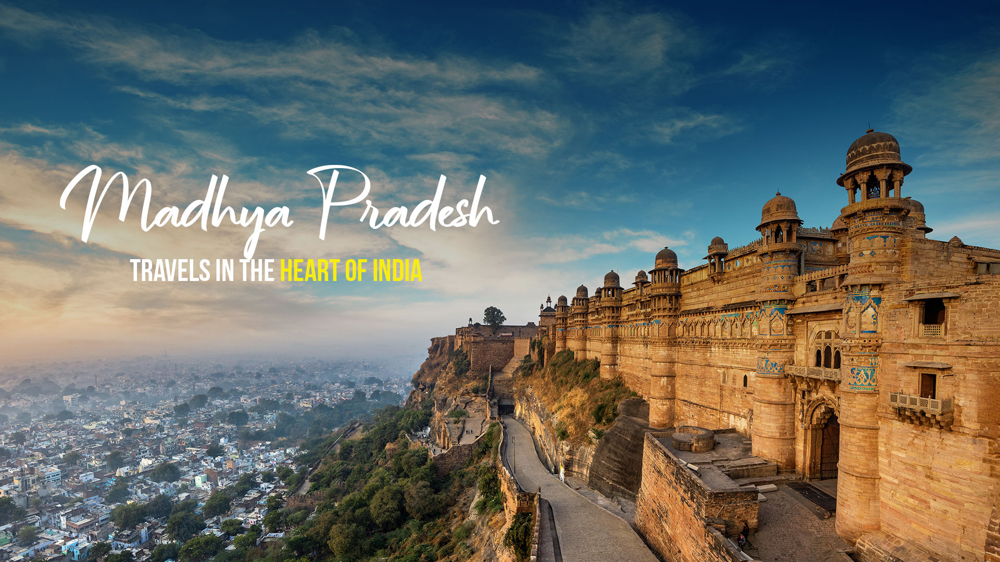
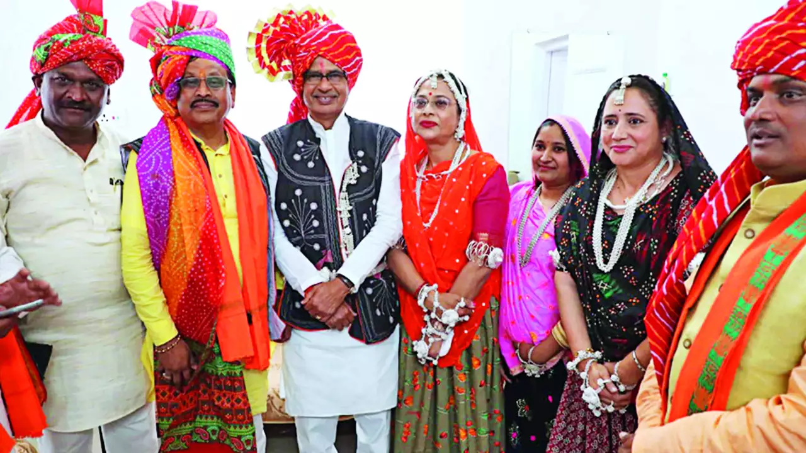
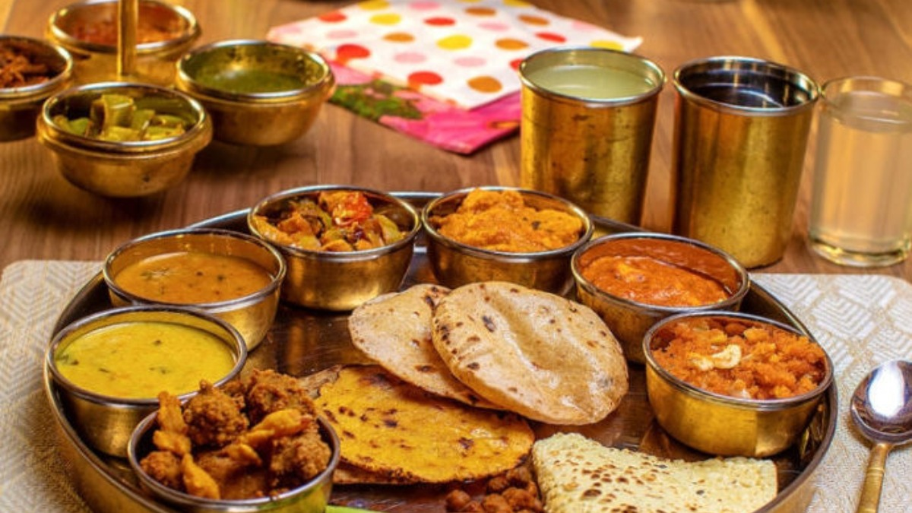

╰┈➤Madhya Pradesh Information
| ✧ Aspect | Information |
|---|---|
| ✧ Capital | Bhopal |
| ✧ Chief Minister | Shivraj Singh Chouhan |
| ✧ Largest City | Indore |
| ✧ Districts | 52 |
| ✧ Official Language | Hindi |
| ✧ Other Language | Bundeli, Bagheli, Nimari, Marathi, Sindhi, Urdu, and Malwi |
| ✧ Population | Approximately 82 million |
| ✧ Area | 308,252 square kilometers |
| ✧ Major Rivers | Narmada, Tapti, Chambal |
| ✧ Major Industries | Textiles, Cement, Handicrafts, Agriculture |
| ✧ Popular Places | Khajuraho Temples, Sanchi Stupa, Kanha National Park, Bandhavgarh National Park |
╰┈➤Traditional Attire of Madhya Pradesh
Traditional attire in Madhya Pradesh varies across different regions. In general, for men, it includes dhoti, kurta, and turban (pagri), while for women, it consists of sarees and lehengas with colorful dupattas. The attire reflects the rich cultural diversity of the state.
╰┈➤History of Madhya Pradesh
Madhya Pradesh, located in central India, has a history that spans several millennia. The region has been inhabited since prehistoric times, as evidenced by archaeological finds such as the Bhimbetka rock shelters.
The recorded history of Madhya Pradesh begins with the rise of powerful kingdoms like the Mauryas and the Guptas. It was also an important center during the medieval period under the rule of dynasties like the Paramaras and the Chandels.
During the medieval period, the region witnessed the flourishing of art and architecture, exemplified by the magnificent temples of Khajuraho and the Buddhist stupas at Sanchi.
In the 16th century, the Mughals established their dominance over parts of Madhya Pradesh, followed by the Marathas and later the British. After India gained independence in 1947, Madhya Pradesh was formed as a state, consolidating various princely states and territories.
Today, Madhya Pradesh is known for its rich cultural heritage, biodiversity, and historical landmarks, attracting tourists from around the world.
Thank you
╰┈➤Madhya Pradesh Pictures



